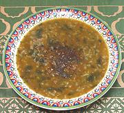

|
Lentil & Purslane SoupPersia - Kurdistan - Palpina | ||||
| Makes: Effort: Sched: DoAhead: |
6 cups ** 1-1/4 hr Yes |
This delicious and substantial soup is popular in Kurdistan in the spring. It can be made ahead, and reheats well if you are careful the lentils don't burn to the bottom of the pot. | |||
|
|
2/3 1/3 3 14 ------- 2/3 1/4 2 2 ------ 6 ------ ----- |
c c oz oz --- t t T t --- c --- --- |
Lentils (1) Rice (2) Onion Purslane (3) -- Seasonings Cumin seed Turmeric Tomato paste Salt ----- Stock (4) -- Garnish Black Pepper -- Serve with (opt) Flatbread (5) Cheese (6) Herb Plate (7) |
Prep - (13 min)
|
nop_lntpsl1 161012 top99 - www.clovegarden.com
©Andrew Grygus - agryg@aaxnet.com - Linking to and
non-commercial use of this page is permitted.